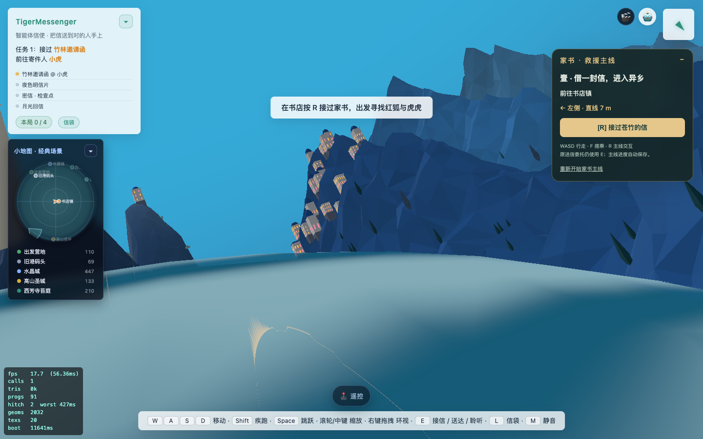
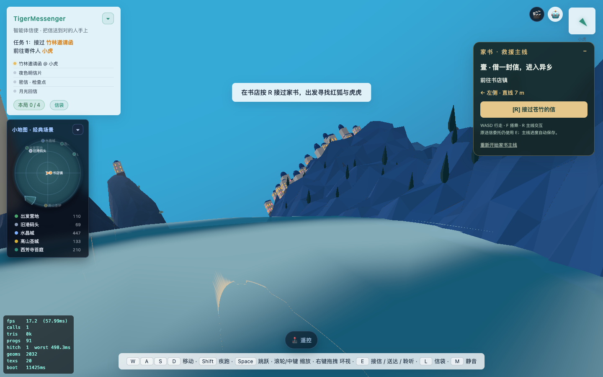
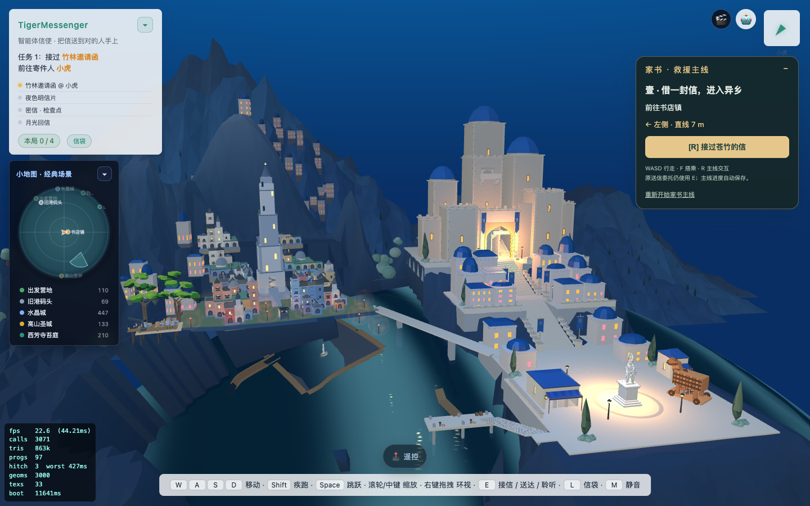
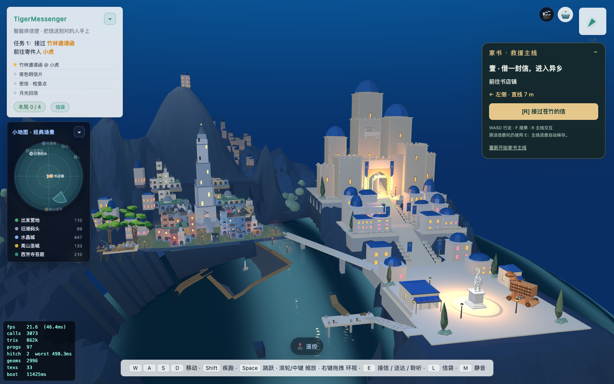
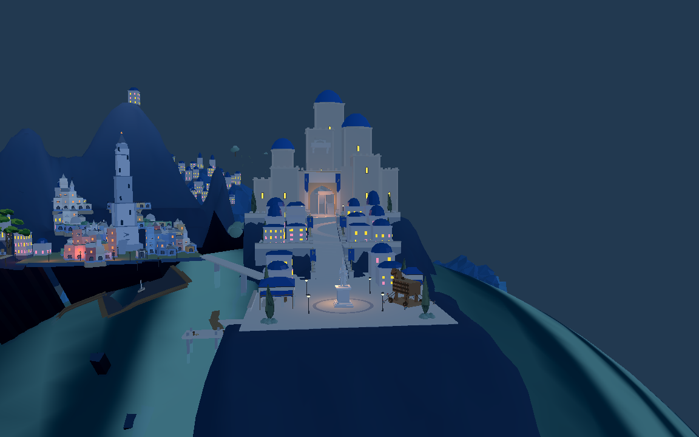

8931原游戏实景。远山由局部平面改为贴合真实球面海水，四周逐渐降至水下。保留分层山峰，树木重新沿球面立起。这里是几何衔接修复，尚未达到认可目标图的整体山势与双城构图。
进入8931原游戏（刷新以加载新几何） · 岸线与树木支撑检查 · 原通路检查




三层726个外缘点均低于海面约3米；278棵树支撑通过；原通路2561点支撑与阻挡检查通过。截图使用独立测试浏览器，没有移动用户角色或更改用户存档。其他岸线、近城台地、旧城朝向及新广场仍待继续迭代。

已导入同批GLB，原短剑兵734点通路通过。本次测试窗口已退出；没有增加常驻Godot编辑器。